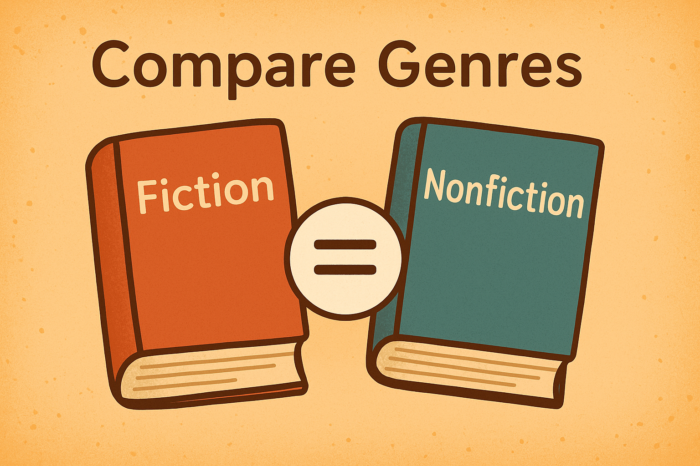

Your Challenge
Compare and contrast two genres using a Venn diagram. You will use the Google Slides Venn template attached to the Classroom assignment.
1
Open the Classroom assignment and your Slides copy of the Venn Diagram template.
2
Choose two genres (e.g., Fantasy & Mystery, Realistic Fiction & Historical Fiction, Fiction & Nonfiction).
3
List at least 3 differences in the outer circles and 3 similarities in the middle.
4
Add one book example for each genre. (Title + author is enough.)
5
Check spelling and clarity, then Turn it in on Classroom.
Genre Ideas
- 🧙Fantasy
- 🕵️Mystery
- 🏫Realistic Fiction
- 📜Historical Fiction
- 🔬Science Fiction
- 📘Nonfiction
- 💀Horror
- 🏀Sports
Success Checklist
- Both genres are clearly labeled
- At least 3 similarities and 3 differences
- One book example for each genre (title + author)
- Ideas are in the correct sections of the Venn diagram
- Spelling, capitalization, and neat layout
Tip: Think about story elements (characters, setting, problem/solution) for fiction and text features (headings, captions, diagrams) for nonfiction when comparing.